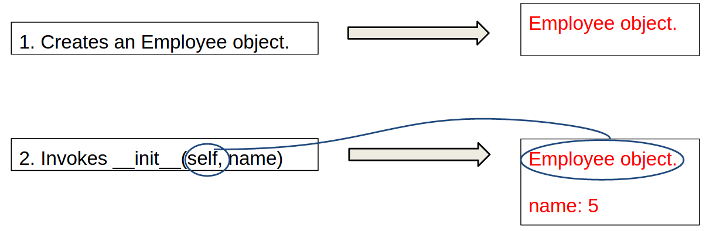

Scope of Variables
Scope: the part of the program where the variable can be referenced.
A variable created inside a function is referred to as a local variable. Local variables can only be accessed inside a function. The scope of a local variable starts from its creation and continues to the end of the function that contains the variable.
In Python, you can also use global variables. They are created outside all functions and are accessible to all functions in their scope.
Example 1
Example 2
Example 3
Example 4
Example 5
Objects
- In Python, all data —including numbers and strings— are actually objects.
- An object is an entity. Each object has an id and a type.
Methods
- You can perform operations on an object. The operations are defined using functions. The functions for the objects are called methods in Python. Methods can only be invoked from a specific object, using the dot notation
Seeing what methods are available
- You can use the dir() introspection function to see what methods have been defined for an object
The format() method
- The format method helps to format the string
- Either with positional arguments:
text = "During session {}, " \
"we learned to use {} ".format(5, 'OOP')- Or with named arguments
text = "During session {session_name}, " \
"we learned to use {topic} ".format(session_name=5, topic='OOP')Creating our own Class
Syntax:
class NameOfTheClass:
# the class bodyExample
class Employee:
passCreating instances of a class
Instances are objects created from the class blueprint. When we create an object of a class, we say that we instantiate the object
Example:
class Employee:
pass
employee1 = Employee()
employee2 = Employee()
print(type(employee1))
print(employee1)Attributes of an object
- To add an attribute we can simply add an attribute with the dot notation and assign a value to the attribute
class Employee:
pass
employee1 = Employee()
employee1.name = "Matt"The special initializer method
- Instead of adding the attribute after creating our object, we can create them directly when creating the object, in the initializer method
# class creation
class Employee:
def __init__(self, name):
self.name = name
#object creation
employee1 = Employee('Matt')Constructing Objects
- Once a class is defined, you can create objects from the class by using the following syntax, called a constructor:
my_new_object = ClassName(optional_arguments)
Constructing Objects
The effect of constructing an Employee object with ...
employee1 = Employee(5)... is shown below:
Exercise: adding attribute
- Complete the previous code to create a new attribute "date_of_birth" to the Employee class
- Create 2 employee objects
Instance Methods
- Methods are functions defined inside a class. They are invoked by objects to perform actions on the objects.
- All the methods, including the constructor have the first parameter self, which refers to the object that invokes the method.
class Employee:
def __init__(self, name):
self.name = name
def generate_email_address(self):
return self.name + "@company.com"
employee1 = Employee('Matt')
# we call the method on the object
employee1.generate_email_address()Exercise: adding a method
- Complete the previous code by adding an additional method (set_name) that will set a new name to the employee
- You should call the method like so:
employee1.set_name("Bob")employee1.nameAccessing Objects
- After an object is created, you can access its data fields and invoke its methods using the dot operator (.)
# we create an employee object
employee1 = Employee('Matt')
# we call the method of the object using the dot notation
employee1.generate_email_address()
# we access one of the attribute of the object
employee.nameUML Class Diagram

Trace execution
See what is happening in memory with Pythontutor (click link)
Example: Defining Classes and Creating Objects

Example: Defining Classes and Creating Objects
Exercise - The Rectangle class
Following the example of the Circle class, design a class named Rectangle to represent a rectangle. The class contains:
- Two data fields named width and height.
- A constructor that creates a rectangle with the specified width and height. The default values are 1 and 2 for the width and height, respectively.
- A method named getArea() that returns the area of this rectangle
- A method named getPerimeter() that returns the perimeter
Implement the class. Write a test program that creates two Rectangle objects—one with width 4 and height 40 and the other with width 3.5 and height 35.7. Display the width, height, area, and perimeter of each rectangle in this order.